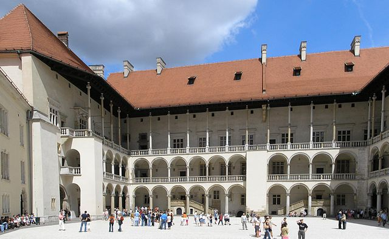
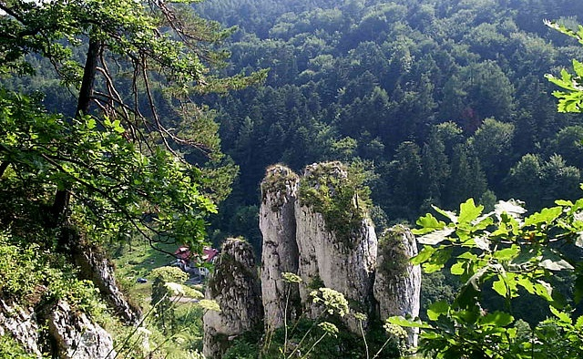
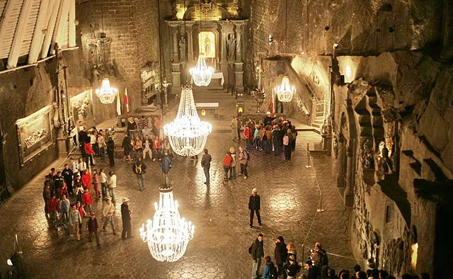

Vibrant Krakow
Krakow is the second largest and one of the oldest cities in Poland. Situated on the Vistula River in the Lesser Poland region, the city dates back to the 7th century. Kraków has traditionally been one of the leading centres of Polish academic, cultural, and artistic life and is one of Poland's most important economic hubs

Capital legacy
It was the capital of the Crown of the Kingdom of Poland from 1038 to 1569; the Polish–Lithuanian Commonwealth from 1569 to 1596; the Free City of Kraków from 1815 to 1846; the Grand Duchy of Cracow from 1846 to 1918; and Kraków Voivodeship from the 14th century to 1998. It has been the capital of Lesser Poland Voivodeship since 1999

Stone Age legacy
The city has grown from a Stone Age settlement to Poland's second most important city. It began as a hamlet on Wawel Hill and was already being reported as a busy trading centre of Slavonic Europe in 965. Throughout the 20th century, Kraków reaffirmed its role as a major national academic and artistic centre
In 1978 UNESCO approved the first ever sites for its new World Heritage List, including the entire Old Town in inscribing Cracow's Historic Centre.
Cited as one of Europe's most beautiful cities, its extensive cultural heritage across the epochs of Gothic, Renaissance and Baroque architecture includes the Wawel Cathedral and the Royal Castle on the banks of the Vistula river, the St. Mary's Basilica and the largest medieval market square in Europe, the Rynek Główny. Kraków is home to Jagiellonian University, one of the oldest universities in the world and traditionally Poland's most reputable institution of higher learning. Kraków is classified as a global city by GaWC, with the ranking of Gamma-.
In 2000, Kraków was named European Capital of Culture. The city will also host the next World Youth Day in 2016.
Wawel Castle

The Gothic Wawel Castle in Kraków in Poland was built at the behest of Casimir III the Great, who reigned from 1333 to 1370, and consists of a number of structures situated around the central courtyard.
Ojców National Park

The park contains numerous castles, including a ruined Gothic castle at Ojców and a better-preserved Renaissance castle at Pieskowa Skała, both of which were part of a late-medieval system of defenses in southwestern Poland, known as the Trail of the Eagles' Nests.
Wieliczka Salt Mine

Wieliczka in southern Poland lies within the Kraków metropolitan area. Opened in the 13th century, the mine produced table salt continuously until 2007, as one of the world's oldest salt mines in operation.